和
和3．德萨格的工作
直接寻找上述问题答案的第一个人是自学成名的德萨格（1591—1661）。他先是陆军军官，其后成为一个工程师和建筑师。德萨格通晓阿波罗尼斯的著作，并觉得他能发明新方法来证圆锥曲线的定理。他确实这样做了，并且充分认识到他这些方法的功效。德萨格还关心改进艺术家、工程师和石匠的教育和技艺，他对于为理论而研究理论是很不赞成的。他的头一步工作是汇集许多有用的定理，起初是通过书信和传单传播他所获得的成果。他还在巴黎免费给人讲课。后来他写了几本书，其中一本是教儿童学唱的书。另一本讲几何在泥瓦工和石工方面的应用。
他的主要著作是《试论锥面截一平面所得结果的初稿》（Brouillon proj ect d'une atteinte aux événemens des rencontres du cône avec un plan，1639）(1)。在这书之前他于1636年出版了关于透视法的一本小册子。在这部主要著作中，他论述了现今所谓的几何中的射影法。德萨格把书印了约50份，分送给他的朋友。不久所有的复制本都失传了。1845年沙勒（Michel Chasles）偶然发现了拉伊尔（Philippe de La Hire）手抄的复本，由波德拉（N．G．Poudra）加以复制，并由他在1864年编辑了德萨格的著作。但1950年左右穆瓦齐（Pierre Moisy）在巴黎国立图书馆里发现了一本1639年的原版本并复制发行。这新发现的版本中包含了重要的附录和德萨格所作的订正。德萨格关于三角形的主要定理和其他一些定理则于1648年发表在他朋友博斯（Abraham Bosse，1602—1676）所著的一本关于透视法的书的附录中。博斯在他的这本《运用德萨格透视法的一般讲解》（Manière universelle de M．Desargues，pour pratiquer la perspective）中打算用通俗方式讲解德萨格的一些实用方法。
德萨格用了一些古怪的术语，其中有些曾出现在艾伯蒂的著作中。他把一根直线称作一棵“棕”（palm），把标有点的一根直线叫做一个“干”（trunk）。但若一直线上有三对点有对合关系（见下述），那它就叫做一棵“树”。德萨格采用这些新术语的用意是想用比较普通的说法讲清道理而避免意义含糊。但这种语句和奇怪生疏的思想使他的书难于阅读。除了他的朋友梅森、笛卡儿、帕斯卡和费马外，他的同时代人都称他为怪人。甚至连笛卡儿本人，当他听说德萨格在创用一种新方法处理圆锥曲线时，也写信给梅森说，除了借助于代数之外他看不出任何人能对圆锥曲线搞出什么新的名堂来。但当笛卡儿知道了德萨格工作的细节之后就对之高度推崇。费马认为德萨格是圆锥曲线理论的真正奠基者，并且觉得他写的书（费马显然拥有此书）思想丰富。但由于一般人未能欣赏，使德萨格灰心丧气，退休回到老家。
在谈德萨格的几个定理之前，必须先引述对平行线的一个新规定。艾伯蒂指出过，在作画的某个实际图景里，画面上的平行线（除非它们平行于玻璃屏板或画面）必须画成相交于某一点。例如上面图14.1中的直线A′B′及C′D′（它们与平行线AB及CD相对应），根据投射及截景的原理，必须相交于某点O′。事实上，O及AB确定一平面，O及CD也确定一平面。这两个平面各交玻璃屏板于A′B′及C′D′，而由于它们交于O，所以这两个平面必有一公共线（交线）；这直线交玻璃屏于某点O′，它也是A′B′与C′D′的交点。这点O′并不对应于AB或CD上的任何普通的点。事实上，OO′线是水平的，从而是平行于AB及CD的。这个点O′叫做没影点，因它在AB或CD上没有对应的点，而A′B′或C′D′上任何其他的点都分别对应于AB或CD上某个确定的点。
为使A′B′与AB上的点以及C′D′与CD上的点之间有完全的对应关系，德萨格在AB上以及在CD上引入一个新的点。它把这点叫做无穷远点，把它增添到两平行直线上普通的点之外，并把它看成是两平行线的公共点。而且平行于AB或CD的任何直线上都有这同一个点，并且都在该点处与AB或CD相交。方向不同于AB或CD的任何一组平行线都同样有一个公共的无穷远点。由于每组平行线都有一个公共点，而平行线组的数目是无穷的，所以德萨格的规定就是在欧几里得平面上引入了无穷多新的点。他进一步假定所有这些点都在同一直线上，而这直线则对应于截景（或画面）上的水平线或没影直线。这样就在欧几里得平面的已有直线中添入了一根新的直线。他假定一组平行平面上都有一根公共的无穷远线；就是说，所有平行平面都相交于一直线。
在每根线上增加一个新点，这件事并不与欧几里得几何的任何公理或定理相矛盾，但它确乎需要在文字叙述上加以修改。不平行的直线仍然相交于普通的点，但平行线则相交于每根线上的“无穷远点”。关于无穷远点的这一规定实质上是欧几里得几何里一件方便的事，因它避免了特殊情形。例如，现在就可以说任何两直线必然恰交于一点。我们不久可以更充分地看出这个规定的好处。
开普勒也（在1604年）决定要给平行线增添一个无穷远点，但出于不同的理由。对于通过P（图14.3）而交于l的每根直线，有l上的一点Q与之对应。但对于过P而平行于l的直线PR，却没有l上的点同它对应。但若增添PR及l所共有的一个无穷远点，开普勒便可断言通过P的每根直线都交于l。又，在Q往右移向“无穷远”而PQ变为PR后，可把PR与l的交点看成是P左边的一个无穷远点，而当PR继续绕P旋转时，PR与l的交点Q′就从左边移近。这样，就使PR与l交点的移动保持连续性。换言之，开普勒（以及德萨格）认为直线的两“端”是在“无穷远”处会合的，因而认为直线和圆有同样的结构。事实上，开普勒确乎把一根直线看作是圆心在无穷远处的一个圆。
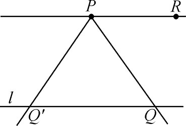
图14.3
引入了无穷远点及无穷远线之后，德萨格就着手叙述一个基本定理，这定理现仍称为德萨格定理。设有点O（图14.4）及三角形ABC。我们知道，从O到三角形边上各点的那些连线形成一投射锥。这投射锥的一个截景就含有一个三角形A′B′C′，其中A′对应于A，B′对应于B，C′对应于C。ABC及A′B′C′这两个三角形叫做从O点看去的透视图。德萨格定理断言：对于从一点透视出去的两个三角形，它们间成对的对应边AB与A′B′，BC与B′C′，以及AC与A′C′（或它们的延长线）相交的三个交点都在同一直线上。反之，若两三角形的三对对应边相交于一直线上的三点，则连接对应顶点的三根连线必交于一点。如果特别针对前面的图形来说，这定理本身告诉我们：AA′，BB′以及CC′交于一点O，AC与A′C′交于一点P，AB与A′B′交于一点Q；BC及B′C′交于一点R；而P，Q与R在一直线上。
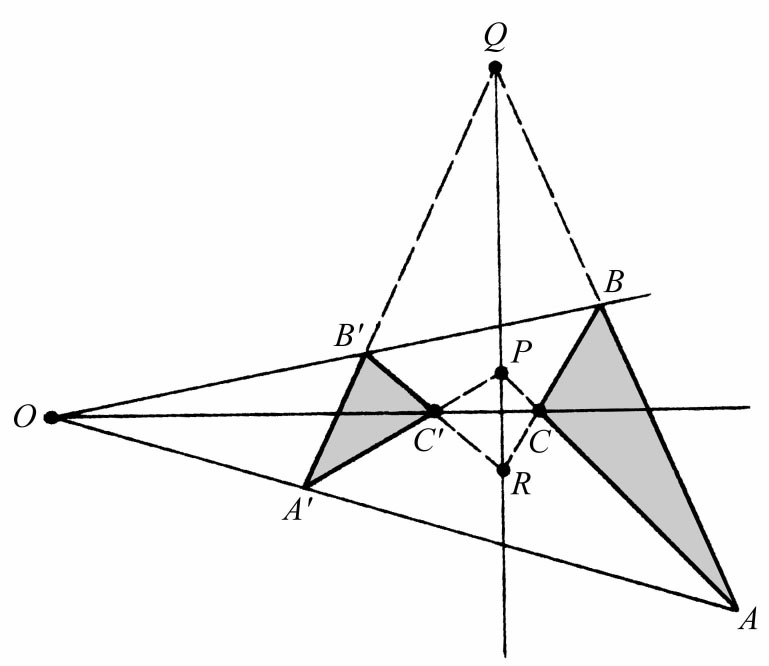
图14.4
这定理虽然对三角形ABC与A′B′C′在同一平面或不在同一平面这两种情形都成立，但其证明只在不同平面的情形才是简单的。德萨格对二维和三维的两种情形都证明了正定理和逆定理。
在博斯的1648年著作的附录里，载有德萨格的另一基本结论：交比在投影下的不变性。一直线上A，B，C，D四点所形成的诸线段的交比（图14.5）定义为
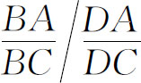
。帕普斯早就引入过这个比（第5章第7节），并证明了在AD及A′D′上的交比是一样的。梅内劳斯也有一个关于球面上大圆弧的类似定理（第5章第6节）。但他们都不是从投射锥和截景的观点来考虑的。而德萨格则是这样考虑的，并且证明了投射线的每个截线上的交比都相等。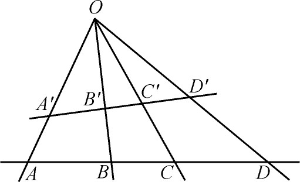
图14.5
德萨格在他的主要著作（1639）里处理了对合的概念，这是帕普斯早就引入而由德萨格定名的。直线上两对点A，B以及A′，B′说是对合的，如果该直线上有一特定点O（名叫对合中心），使OA·OB＝OA′·OB′（图14.6）。同样，三对点A，B，A′，B′以及A″，B″说是对合的，如果OA·OB＝OA′·OB′＝OA″·OB″。点A和B，A′和B′，以及A″和B″叫做共轭点。若有一点E使OA·OB＝OE2，则E叫做二重点。在这种情况下还有另一个二重点F，而O是EF的中点。O的共轭点是无穷远点。德萨格在一根与三角形三边相交的直线上应用梅内劳斯定理，证明在A，B，A′及B′有对合关系时（图14.7），若从点P把它们投射到另一直线上，成为点A1，B1，
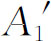
和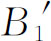
，则这第二组点也是对合的。
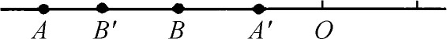 | 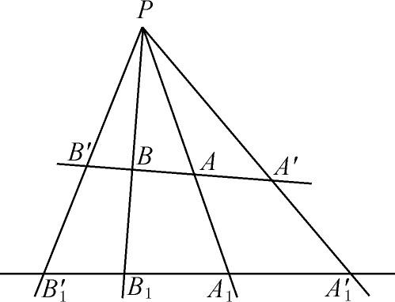 |
| 图14.6 | 图14.7 |
关于对合关系，德萨格证明了一个主要定理。为此我们先来考察完全四边形的概念，这是帕普斯已经部分探讨过的一个概念。设B，C，D及E是平面上任意四点，其中没有任何三点是共线的（图14.8）。这时四点就确定了六根直线，形成完全四边形的各边。对边是彼此不相交于四点之一的两边。例如BC及DE是对边，CD及BE还有BD及CE也都是对边。三对对边的交点O，F与A是四边形的对边点。今设四个顶点B，C，D，E在一圆上。如果一直线PM交各组对边于P，Q，I，K以及G，H；交圆于L，M。那么这四组点是四组对合的点。
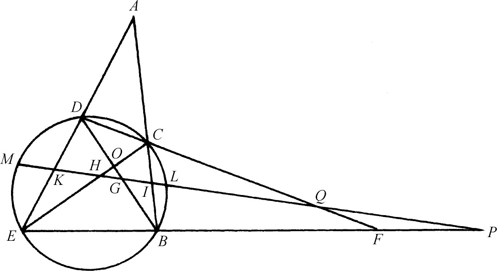
图14.8
其次，设在图形所在平面外一点把整个图形作一投射，并取这投射锥的一个截景。这样原图里的圆就变成截景里的一个圆锥曲线，原图里的每根直线变成截景里的某根直线。特别是圆内接四边形就变成圆锥曲线内接四边形。由于对合关系在投影后还是对合关系，故得出一个重要而普遍的结论：若作一圆锥线的内接四边形，则任一不过顶点的直线与圆锥线以及与完全四边形对边相交的四对点有对合关系。
德萨格其次引入了调和点组（也称“调和点列”。——译注）的概念。点A，B，E及F说是成为一调和点组，如果相对于对合关系中的二重点E和F来说，A与B是共轭点。（现今定义交比等于-1的点组为调和点组，那是以后的说法。）(2)由于对合关系经投射后仍为对合关系，故调和点组经投射后仍为调和点组。接着德萨格又证明若调和点组中的一点是无穷远点（在四点所在直线上），则与之相配的那另一点平分其他两点间的线段。又，若A，B，A′及B′是调和点组（图14.9），且若从O作投射，则当OA′垂直于OB′时，OA′平分AOB角而OB′平分它的补角。
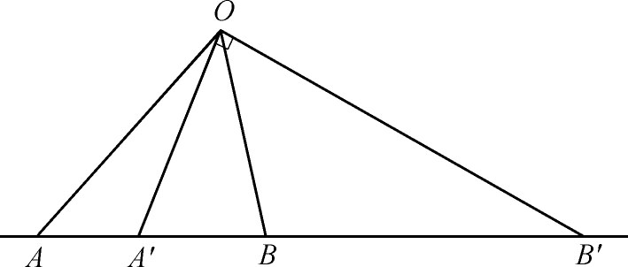
图14.9
有了调和点组的概念之后，德萨格就进而阐释极点与极线的理论，这是阿波罗尼斯早已引入过的理论。德萨格从一圆和圆外一点A出发（图14.10）。则在从A出发交圆于C及D的任一直线上，必有第四个调和点B。对于所有从A出发的这种直线而言，所有的第四调和点都位于一直线上，这直线就是点A的极线。如BB′就是A的极线。又，假设我们引入任一完全四边形，它以A为一个对边点而其四顶点都在圆上。例如，取C，D，D′及C′作为这样一个完全四边形的顶点。则A的极线将通过这完全四边形的另外两个对边点。（在图14.10中，R是这两个对边点之一。）当A在圆内时，同样的断言也成立。若A在圆外，则A的极线是从A所引圆的两根切线的切点（图中的点P及Q）的连线。
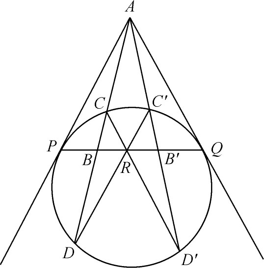
图14.10
对于圆证明了上述断言之后，德萨格又用从图形平面外一点所作的投射及其一个截景来证明这些断言对任何圆锥曲线都成立。
德萨格把圆锥曲线的直径看作无穷远点的极线。我们马上可以看到这定义与阿波罗尼斯的定义是一致的。设有一组平行线与圆锥曲线相交（图14.11）。这些平行线有一公共点即无穷远点。若A′B′是其中一直线，则A′B′上关于A′及B′而言的无穷远点的调和共轭点是弦A′B′的中点B。同样，无穷远点对于和
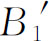
而言的调和共轭点是弦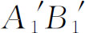
的中点B1。平行弦族的这些中点位于一根直线上，而这直线按阿波罗尼斯的定义也是直径。德萨格然后证明关于双曲线的直径、共轭直径以及渐近线的一些事实。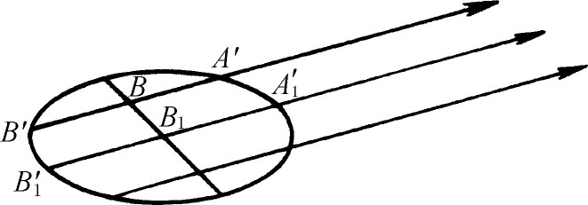
图14.11
现在我们看到，德萨格不仅引入了诸如无穷远元素等新的概念以及许多新的定理，尤其重要的是他引入了以投射和截景作为一种新的证明方法，而且通过投射和截景统一处理了几种不同类型的圆锥曲线，而阿波罗尼斯则是把每类圆锥曲线分别处理的。在这一个天才辈出的世纪里，德萨格是最有独创精神的数学家之一。